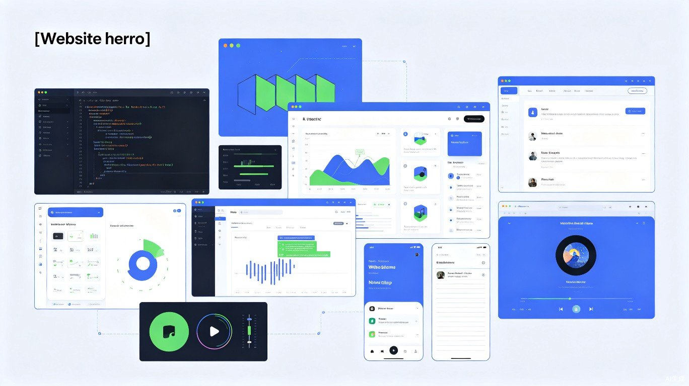

精选高效工具，覆盖办公、开发、创作、娱乐全场景

macOS 拥有丰富且高质量的应用生态。本页按照不同使用场景，整理了各类值得安装的 Mac 应用，帮助你提升工作效率、释放创作潜能，同时更好地管理和保护你的系统。
这部分应用聚焦于知识管理、快速启动、窗口整理和剪贴板增强，是提升 macOS 日常使用效率的核心工具。
| 名称 | 类型 | 价格 | 获取方式 | 推荐理由 |
|---|---|---|---|---|
| Notion | 笔记/知识库 | 免费 / 付费订阅 | 官网 / App Store | 功能极其全面的 All-in-one 工作空间，支持数据库、看板、文档协作 |
| Obsidian | 笔记/知识库 | 免费 / 付费增值服务 | 官网 | 基于本地 Markdown 文件，双向链接构建知识网络，隐私性强 |
| 语雀 | 笔记/文档 | 免费 / 会员订阅 | 官网 / App Store | 国内团队出品，适合中文用户，目录和表格功能出色 |
| Raycast | 启动器/效率 | 免费 / Pro 订阅 | 官网 | 现代化启动器，支持脚本、扩展、剪贴板历史、窗口管理，替代 Spotlight 的首选 |
| Alfred | 启动器/效率 | 免费 / Powerpack 付费 | 官网 | 老牌启动器，工作流（Workflows）生态极其丰富，自动化能力强大 |
| Magnet | 窗口管理 | 付费（约 48 元） | App Store | 通过快捷键快速将窗口分屏到上下左右及四角，操作直观 |
| Rectangle | 窗口管理 | 免费 / Pro 可选 | 官网 / App Store | Magnet 的开源免费替代品，功能接近，支持触控板手势 |
| Paste | 剪贴板历史 | 付费订阅 | App Store | 美观的剪贴板管理器，支持图片、文件、文本历史记录和 iCloud 同步 |
笔记工具：重视协作和结构化数据库选 Notion；重视隐私和本地文件选 Obsidian；国内团队协作可考虑语雀。
启动器：Raycast 界面现代、免费功能已足够强大；Alfred 的工作流生态更成熟，适合重度自动化用户。
窗口管理：想直接购买选 Magnet；偏好免费开源方案选 Rectangle，两者体验差异不大。
Mac 是开发者最受欢迎的平台之一，以下工具覆盖了代码编辑、终端、数据库和容器化等核心开发需求。
| 名称 | 类型 | 价格 | 获取方式 | 推荐理由 |
|---|---|---|---|---|
| Visual Studio Code | 代码编辑器 | 免费开源 | 官网 / Homebrew | 微软出品，插件生态最丰富，支持几乎所有编程语言 |
| Cursor | AI 代码编辑器 | 免费 / Pro 订阅 | 官网 | 基于 VS Code，内置 AI 辅助编程，支持代码生成、重构和智能问答 |
| iTerm2 | 终端模拟器 | 免费开源 | 官网 / Homebrew | 功能远超系统自带终端，支持分屏、搜索、热键窗口和高度自定义 |
| TablePlus | 数据库管理 | 免费试用 / 付费 | 官网 / App Store | 界面现代简洁，支持 MySQL、PostgreSQL、MongoDB 等多种数据库 |
| Docker Desktop | 容器化平台 | 免费 / 付费订阅（大企业） | 官网 / Homebrew | 在 Mac 上运行和管理 Docker 容器的标准工具，开发和部署必备 |
终端增强：iTerm2 配合 Oh My Zsh 或 Starship 提示符，可获得极佳的命令行体验。
数据库：TablePlus 适合日常查询和管理；如果是纯开源偏好，也可考虑 DBeaver 作为替代。
容器：Docker Desktop 在 Apple Silicon Mac 上运行良好，注意为容器分配合理的 CPU 和内存资源。
macOS 在设计领域长期占据主流地位，无论是 UI 设计、平面设计还是三维创作，都能找到专业级工具。
| 名称 | 类型 | 价格 | 获取方式 | 推荐理由 |
|---|---|---|---|---|
| Figma | UI/UX 设计 | 免费 / 专业版订阅 | 官网（网页/客户端） | 最流行的协作设计工具，实时多人协作，原型与交付一体化 |
| Sketch | UI/UX 设计 | 付费订阅 | 官网 | Mac 原生 UI 设计工具，插件生态成熟，适合本地工作流程 |
| Adobe Creative Cloud | 创意套件 | 订阅制 | 官网 | 包含 Photoshop、Illustrator、Premiere Pro 等行业标准工具 |
| Affinity 系列 | 图像/矢量/排版 | 一次性买断 | 官网 / App Store | 包含 Photo、Designer、Publisher，功能接近 Adobe，无订阅压力 |
| Blender | 三维创作 | 免费开源 | 官网 / Homebrew | 功能全面的三维建模、动画、渲染和合成软件，社区极其活跃 |
UI 设计：团队协作和跨平台选 Figma；偏好原生 Mac 体验和本地文件管理选 Sketch。
图像处理：行业标准且功能最全的是 Adobe Photoshop；希望一次性付费则选 Affinity Photo，性能优秀。
三维创作：Blender 完全免费且功能不输商业软件，是入门和进阶的首选。
Mac mini 不仅是生产力工具，搭配合适的媒体应用后，也能成为出色的娱乐中心。
| 名称 | 类型 | 价格 | 获取方式 | 推荐理由 |
|---|---|---|---|---|
| IINA | 视频播放器 | 免费开源 | 官网 / Homebrew | 专为 macOS 设计，界面美观，支持几乎所有格式，可代替 VLC |
| Infuse | 视频播放器/媒体库 | 免费 / Pro 订阅 | App Store / 官网 | 精美的媒体库管理，支持 Dolby Vision 和 DTS 音频，Apple TV 同步 |
| Spotify | 音乐流媒体 | 免费 / 付费订阅 | 官网 / App Store | 全球最大的音乐流媒体平台，曲库丰富，推荐算法成熟 |
| 网易云音乐 / QQ音乐 | 音乐流媒体 | 免费 / 付费订阅 | 官网 / App Store | 国内主流音乐平台，版权和社交功能更符合中文用户需求 |
| Downie 4 | 视频下载 | 付费（约 128 元） | 官网 / App Store | 支持从绝大多数视频网站下载视频，操作简单，更新及时 |
本地视频：IINA 是免费开源的最佳选择；如果你希望拥有像海报墙一样的媒体库体验，Infuse 的 Pro 版非常值得订阅。
音乐：Spotify 适合探索全球音乐；如果主要听华语流行，网易云或 QQ 音乐更适合。
视频下载：Downie 4 支持 Safari 扩展，在网页上直接点击即可下载，效率极高。
这些工具能帮助你保持系统清洁、监控运行状态，以及实现更精细的电源和性能管理。
| 名称 | 类型 | 价格 | 获取方式 | 推荐理由 |
|---|---|---|---|---|
| CleanMyMac X | 系统清理 | 付费订阅 / 买断 | 官网 / App Store | 一站式清理垃圾、卸载应用、管理启动项和监控系统健康 |
| AppCleaner | 卸载清理 | 免费 | 官网 | 轻量级卸载工具，能扫描并删除应用残留的配置文件 |
| Stats | 菜单栏监控 | 免费开源 | 官网 / Homebrew | 在菜单栏实时显示 CPU、内存、网速、温度等硬件信息 |
| Amphetamine | 电源管理 | 免费 | App Store | 防止 Mac 进入休眠或触发屏幕保护，可基于条件（如特定应用运行）自动触发 |
系统清理：轻度用户用免费的 AppCleaner 即可满足卸载需求；如果需要定期深度清理和维护，CleanMyMac X 功能更全面。
硬件监控：Stats 是开源免费工具，信息显示清晰且资源占用极低，非常适合长期驻留菜单栏。
防休眠：下载大文件、进行长时间演示或投屏时，Amphetamine 能确保 Mac 不会自动休眠。
保护账户安全和监控网络行为，是数字生活中不可忽视的一环。
| 名称 | 类型 | 价格 | 获取方式 | 推荐理由 |
|---|---|---|---|---|
| 1Password | 密码管理 | 付费订阅 | 官网 / App Store | 行业标杆级密码管理器，界面优雅，家庭共享和旅行模式实用 |
| Bitwarden | 密码管理 | 免费 / 付费订阅 | 官网 / App Store | 开源密码管理器，核心功能完全免费，支持自建服务器 |
| Little Snitch | 网络监控 | 付费（买断） | 官网 | 强大的网络连接监控和防火墙工具，能精确控制每个应用的网络行为 |
密码管理：务必使用密码管理器生成和存储唯一强密码。预算充足选 1Password；追求免费和开源选 Bitwarden。
网络监控：Little Snitch 适合对隐私要求极高的用户，能阻止应用的不必要联网行为，但初次使用需要较多配置。
以上应用覆盖了 Mac 用户日常工作和娱乐中的主要场景。安装时建议优先从 官网 或 App Store 获取，避免从不明渠道下载。